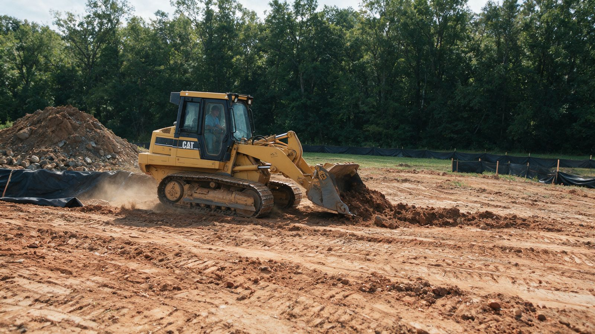
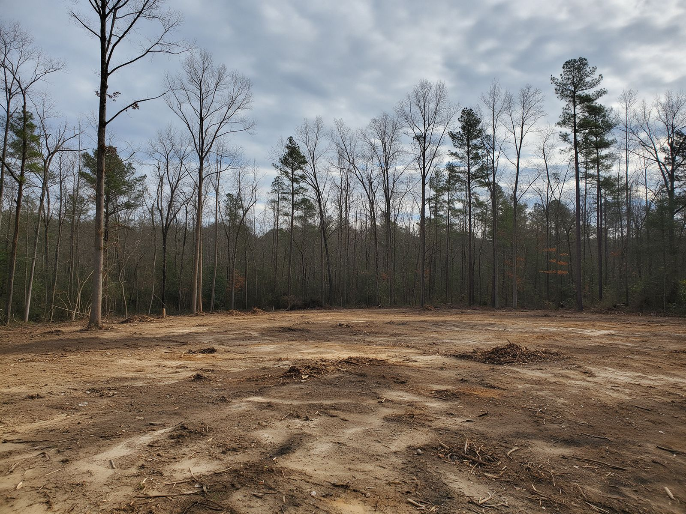

Trail Cutting in Charlotte, NC
A good trail makes a wooded property feel twice as big. It gives you a loop to walk every evening, a route for the side-by-side, or a shaded ride for the horses, all without clearing the woods around it.
We cut trails through Charlotte-area woods with a forestry mulcher, opening a clean path at the width you choose and leaving a soft mulch surface underfoot. We lay them out with the slope, the clay, and the creeks in mind so they hold up instead of washing out.
- Width set for how you'll use it
- Laid out to shed water
- Woods kept on both sides
Get a Free Trail Cutting Estimate
Tell us how you plan to use the trail and roughly how long it should be. We'll call within one business day.
Thanks, we've got it.
Thanks. We'll call within one business day to walk your woods and talk through a route.
Sorry, your request didn't go through. Please call (828) 576-3931 or email patrick@landclearingcharlotte.com.
- Owner on Every JobHe helps lay out the route and runs the cut
- Licensed & InsuredCertificates provided on request
- Free On-Site EstimatesWe walk the route with you first
- Routes That LastLaid out for slope & drainage
What Our Trail Cutting Process Is
A trail is only as good as its route. These four steps get the layout right before the mulcher cuts the first section.
-
01
Scout the Route
We walk the woods together looking for gentle grades, good views, dry ground, and natural features worth routing past.
-
02
Flag the Line
We flag the centerline and width, steering around steep pitches, wet bottoms, and the creek buffer.
-
03
Cut the Trail
The mulcher opens the corridor, grinds brush and saplings, and leaves a mulch tread down the middle.
-
04
Ride It Together
We walk or ride the finished trail with you and point out any spots that may need water bars or drainage later.
Where We Serve for Trail Cutting
We cut trails through wooded properties across Charlotte and the nearby towns below. Town pages are on the way. The main forestry mulching page covers the full service area.
Cutting Trails That Hold Up in Charlotte's Woods
Matching the Width to the Use
The right width depends on who or what will use the trail. A walking path can be narrow and winding, which feels more natural and keeps the woods close. A side-by-side or ATV trail needs to be wide enough for the machine plus some room at the sides so branches don't scrape. A horse trail needs both width and height, since a rider sits well above the ground. Tell us how you'll use it and we'll recommend a width, then flag it before we cut.
Red Clay and Slopes
Charlotte's red clay is the biggest reason homemade trails fail. Run a trail straight down a hill and every storm turns it into a gully, carrying clay into the creek and leaving ruts you can't walk or ride. Good trails follow the slope across the hill at a gentle angle, with small dips or turns that push water off the tread before it builds speed. We look at the grade as we lay out the route and avoid the straight-downhill lines that wash out first.
Drainage and Wet Spots
Low, flat ground in the Piedmont often stays wet for days after rain. Trails routed through those spots turn to mud and get wider as people walk around the puddles. Where we can, we route around wet bottoms. Where the trail has to cross a soggy area, we'll point it out so you can plan for a crossing or a little fill later. Leaving the mulch on the tread also helps soften and protect the surface.
Staying Out of the Creek Buffer
Many wooded properties around Charlotte drain to a creek, and those creeks are often the nicest part of the woods. Mecklenburg County's S.W.I.M. stream buffer rules restrict clearing within a set distance of many streams, so we lay trails out to parallel the creek from a distance rather than hugging the bank. Confirm with the county what buffer applies to your stream. If you want a crossing, ask the county about that before anything is cut.
Keeping the Woods on Both Sides
A trail should feel like it runs through the woods, not like a cleared strip. We keep the mulcher inside the flagged corridor, steer around good trees at the edge, and leave the understory standing outside the trail. Where a route passes a big oak or a nice view, we can bend the trail to show it off.
Keeping It Open
Trails in the Piedmont grow back in from the sides. Briars, sweetgum sprouts, and privet push into the opening each season. A light trim every year or two keeps the full width, and on longer trail systems we can come back on a schedule to re-mulch the edges.

Picturing a trail through your woods?
Tell us where it should start and end and how you'll use it. We'll walk the best route with you.
Plan My TrailOther Services We Provide in Charlotte
Trail cutting is one of eight forestry mulching services we provide in Charlotte. Here's everything else we offer, grouped by category.
Why Charlotte Property Owners Choose Us to Cut Their Trails
Layout Comes First
We spend time on the route because a trail laid out well on day one won't wash out in its first summer.
Built for Clay and Rain
We work with the slope rather than straight down it, which keeps water and clay from turning the tread into a gully.
Woods Left Intact
Only the flagged corridor is cleared. The trees and understory beside the trail stay put.
Any Width You Need
From a narrow footpath to a wide horse or side-by-side trail, we cut to the use you have in mind.
A trail is something you'll use for years, so we treat the layout like it matters. We walk the route with you, think about how water will move across it, and cut a path that fits the woods instead of fighting them.
Charlotte Trail Cutting FAQs
How wide should my trail be?
It depends on the use. Walking paths can be narrow, ATV and side-by-side trails need room for the machine plus clearance, and horse trails need extra height and width for the rider. We'll recommend a width when we walk the route.
Can you cut a trail on a steep lot?
Usually, yes. Instead of going straight down the hill, we route the trail across the slope at a gentle grade. That's easier to walk or ride and holds up far better in Charlotte's red clay.
Will my trail erode?
Any trail on clay can erode if water runs down it. Laying it out across the slope, avoiding wet bottoms, and keeping the mulch on the tread all help. Some trails may benefit from water bars or small dips added later.
Can the trail go along the creek?
We keep trails back from creek banks because many Charlotte streams have county buffer rules. Confirm the buffer for your property with Mecklenburg County, and we'll lay the trail out to respect it.
What's left on the trail surface?
A layer of mulch from the brush and small trees we cut. It makes a soft, natural tread and helps protect the soil underneath. Stumps are ground at or near ground level.
Can you connect trails into a loop?
Yes. Loops are popular because you can walk or ride without retracing your steps. We'll look for a route that connects naturally through your woods.
How much does trail cutting cost?
It's priced based on length, width, how thick the growth is, and the terrain. We'll give you a written price after we walk and flag the route together.
How do I keep the trail from growing back in?
Expect brush to creep in from the edges. A light trim every year or two keeps the trail at full width. Regular use helps keep the tread open, too.
Take back your overgrown land.
Free walk-through and written estimate for forestry mulching in Charlotte.